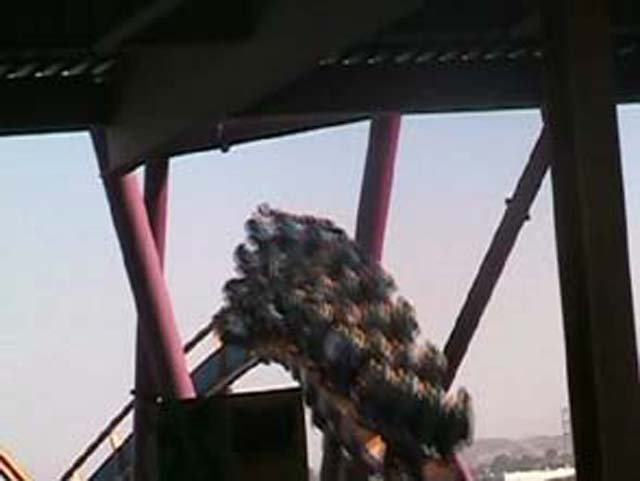

Last 2006 Update
 We're here at Six Flags Magic Mountain to end the coaster season of 2006. Heres a photo of Goliath.
We're here at Six Flags Magic Mountain to end the coaster season of 2006. Heres a photo of Goliath.
"Oh God! What havn't I done on this ride!?!"
 Lets do Scream!
Lets do Scream!

This is something that Medusa at SFMW doesn't have!
Heres a very blurry shot of on Batman!
Why the hell hasn't Six Flags told anyone about this place! The place is forgotton and rotting its way to hell! Its in worse shape than Flashback!
 Any ride that makes you stand up gets an automatic A by Incrediblecoasters standards.
(It just can't be named Vortex)
Any ride that makes you stand up gets an automatic A by Incrediblecoasters standards.
(It just can't be named Vortex)
Riddlers Revenge through the Batman Begins Stage!
"Its OK. I don't need this camera anyways."
"OH CRAP! I CAN"T LET ALL THESE BUTTERFINGER BBs GO TO WASTE!!!!!'
0 to 100 mph in 7 seconds! Geez the launch is so boring!
DejaVu is actually really good! Its not that rough and the 90 degree sections are cool!
 "AHHH!!!!! ITS PSYCLONE!!!!"
"AHHH!!!!! ITS PSYCLONE!!!!"
This ride is painful and has squeaky wood! While not nearly as painful as Collosus Backwards, It still jerks you around. its fun, but it jerks you around!
"YOU INSULTED MY PRECIOUS PSYCLONE!!! NOW I"M SO PISSED OF I'M GOING TO KICK YOU RIGHT IN THE NUTS!"
"I"M DRUNK!"
Why would anyone go on this ride in 40 degree weather!
"I would because I'm stupid enough to!"
I'M FREEZING MY ASS OFF!!!!!!
 Luckily there's Tatsu to dry Stupid Cody Off. And thanks to the Xtreme PlayPass, We rode 4 times in a row!
Luckily there's Tatsu to dry Stupid Cody Off. And thanks to the Xtreme PlayPass, We rode 4 times in a row!
 Celeste tried out Revolution today and liked it.
Celeste tried out Revolution today and liked it.
 Viper is the last coaster of the 2006 season! See you in 2007.
Viper is the last coaster of the 2006 season! See you in 2007.
Home